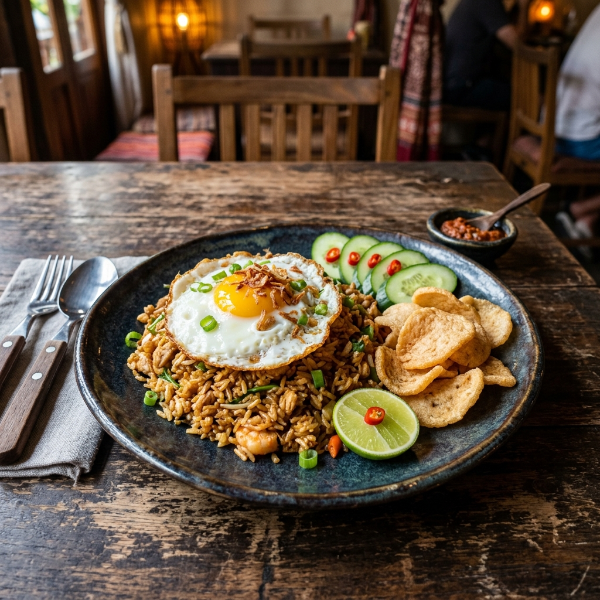

Dari Nasi Goreng legendaris hingga Sate Ayam yang juicy — setiap hidangan dimasak dengan resep turun-temurun dan bahan pilihan terbaik.

Kami tidak hanya menyajikan makanan, tapi pengalaman kuliner Indonesia yang membuat Anda selalu ingin kembali.
Sayuran, daging, dan bumbu kami belanja langsung dari pasar tradisional setiap subuh. Tidak ada bahan beku, semuanya segar.
Resep warisan dari Mbah Yoyok sejak 1998, dijaga keasliannya tanpa kompromi. Rasa yang sama yang membuat pelanggan jatuh cinta sejak hari pertama.
Pesanan siap dalam 10-15 menit. Porsi besar, rasa mantap, dengan harga yang ramah untuk kantong mahasiswa hingga keluarga.
Tahun 1998, Pak Yoyok memulai semuanya dari sebuah gerobak kecil di pinggir Jalan Pahlawan, Surabaya. Bermodal resep Nasi Goreng warisan ibunya dan tekad yang kuat, beliau memasak dari jam 5 sore hingga tengah malam setiap hari.
Hari ini, Restoran Pak Yoyok telah menjadi destinasi kuliner yang dicintai ribuan keluarga. Meski sudah berkembang, satu hal tidak pernah berubah: setiap hidangan tetap dimasak dengan cinta dan bumbu yang sama persis seperti hari pertama.
Tersedia juga layanan take-away dan pesan antar melalui ojek online favorit Anda. Datang langsung untuk pengalaman terbaik!
Jl. Pahlawan No. 45, Surabaya
Peta interaktif — segera hadir
Jl. Pahlawan No. 45, Kelurahan Alun-Alun Contong,
Kec. Bubutan, Kota Surabaya, Jawa Timur 60174
Senin — Jumat: 10.00 — 22.00 WIB
Sabtu — Minggu: 09.00 — 23.00 WIB
Hari Libur Nasional: 10.00 — 21.00 WIB
Telepon: (031) 555-7890
WhatsApp: +62 812-3456-7890
Email: halo@pakyoyok.id